Many of the molecules found within cells are macromolecules, polymers of high molecular weight assembled from relatively simple precursors. Polysaccharides, proteins, and nucleic acids, which may have molecular weights ranging from tens of thousands to (in the case of DNA) billions, are produced by the polymerization of relatively small subunits with molecular weights of 500 or less. The synthesis of macromolecules is a major energy-consuming activity of cells. Macromolecules themselves may be further assembled into supramolecular complexes, forming functional units such as ribosomes, membranes, and organelles.
Table 3-7 shows the major classes of biomolecules in a representative single-celled organism, Escherichia coli. Water is the most abundant single compound in E. coli and in all other cells and organisms. Inorganic salts and mineral elements, on the other hand, constitute only a very small fraction of the total dry weight, but many of them are in approximate proportion to their distribution in seawater (see Table 3-1). Nearly all of the solid matter in all kinds of cells is organic and is present in four forms: proteins, nucleic acids, polysaccharides, and lipids. |
|
||||||||||||||||||||||||||||||
Proteins, long polymers of amino acids, constitute the largest fraction (besides water) of cells. Some proteins have catalytic activity and function as enzymes, others serve as structural elements, and still others carry specific signals (in the case of receptors) or specific substances (in the case of transport proteins) into or out of cells. Proteins are perhaps the most versatile of all biomolecules. The nucleic acids, DNA and RNA, are polymers of nucleotides. They store, transmit, and translate genetic information. The polysaccharides, polymers of simple sugars such as glucose, have two major functions: they serve as energy-yielding fuel stores and as extracellular structural elements. Shorter polymers of sugars (oligosaccharides) attached to proteins or lipids at the cell surface serve as specific cellular signals. The lipids, greasy or oily hydrocarbon derivatives, serve as structural components of membranes, as a storage form of energy-rich fuel, and in other roles. These four classes of large biomolecules are all synthesized in condensation reactions (Fig. 3-14e). In macromolecules-proteins, nucleic acids, and polysaccharides-the number of monomeric subunits is very large. Proteins have molecular weights in the range of 5,000 to over 1 million; the nucleic acids have molecular weights ranging up to several billion; and polysaccharides, such as starch, also have molecular weights into the millions. Individual lipid molecules are much smaller (Mr 750 to 1,500), and are not classed as macromolecules. However, when large numbers of lipid molecules associate noncovalently, very large structures result. Cellular membranes are built of enormous aggregates containing millions of lipid molecules.
| Although living organisms contain a very
large number of different proteins and different nucleic
acids, a fundamental simplicity underlies their structure
(Chapter 1). The simple monomeric subunits from which all
proteins and all nucleic acids are constructed are few in
number and identical in all living species. Proteins and
nucleic acids are informational macromolecules: each
protein and each nucleic acid has a characteristic
information-rich subunit sequence (Fig. 3-15). Polysaccharides built from only a single kind of unit, or from two difl'erent alternating units, are not informational molecules in the same sense as are proteins and nucleic acids (Fig. 3-15). However, complex polysaccharides made up of six or more difl'erent kinds of sugars connected in branched chains do have the structural and stereochemical variety that enables them to carry information recognizable by other macromolecules. |
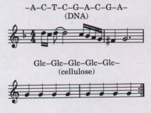 Figure 3-15 Informational and structural macromolecules. A, T, C, and G represent the four deoxynucleotides of DNA, and glucose (Glc) is the repeating monomeric subunit of starch and cellulose. The number of possible permutations and combinations of four deoxynucleotides is virtually limitless, as is the number of melodies possible with a few musical notes. A polymer of one subunit type is information-poor and monotonous. |
Figure 3-16 shows the structures of some monomeric units, arranged in families. We have already seen that the most abundant polysaccharides in nature, starch and cellulose, are constructed of repeating units of D-glucose. The monomeric subunits of proteins are 20 different amino acids; all have an amino group (an imino group in the case of proline) and a carboxyl group attached to the same carbon atom, called, by convention, the a carbon. These α-amino acids differ from each other only in their side chains (Fig. 3-16).
The recurring structural units of all nucleic acids are eight different nucleotides; four kinds of nucleotides are the structural units of DNA, and four others are the units of RNA. Each nucleotide is made up of three components: (1) a nitrogenous organic base, (2) a five-carbon sugar, and (3) phosphate (Fig. 3-16). The eight difl'erent nucleotides oi DNA and RNA are built from five difl'erent organic bases combined with two different sugars.
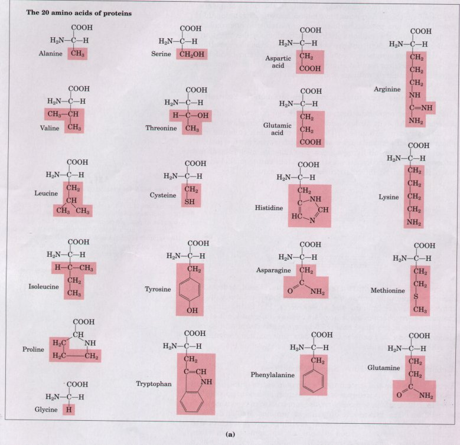
Figure 3-16 The organic compounds from which most larger structures in cells are constructed: the ABCs of biochemistry. Shown on these two pages are (a) the 20 amino acids from which the proteins of all organisms are built (the side chains are shaded red), (b) the five nitrogenous bases, two five-carbon sugars, and phosphoric acid from which all nucleic acids are built, (c) five components found in many membrane lipids, and (d) α-D-glucose, the parent sugar from which most carbohydrates are derived. Note that phosphoric acid is a subunit of both nucleic acids and membrane lipids. The five-carbon and six-carbon sugars are shown here in their ring forms rather than their straightchain forms (Chapter 11). All components are shown in their un-ionized form.
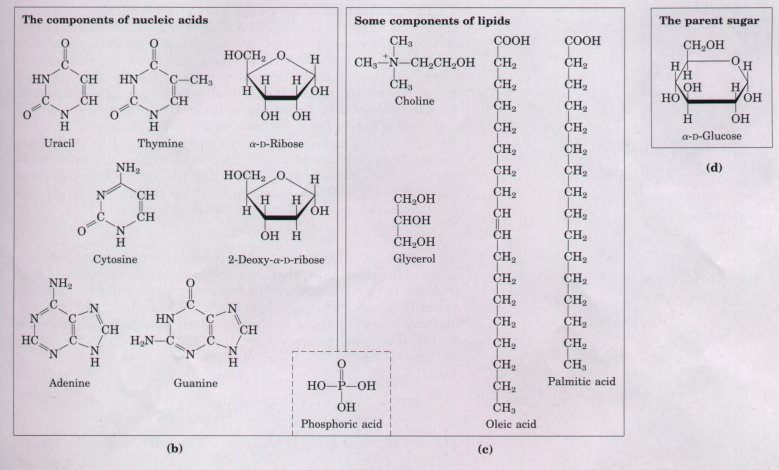
| Lipids also are constructed from
relatively few kinds of subunits. Most lipid molecules
contain one or more long-chain fatty acids, of which
palmitic acid and oleic acid are parent compounds. Many
lipids also contain an alcohol, e.g., glycerol, and some
contain phosphate (Fig. 3-16). Thus, only three dozen
different organic compounds are the parents of most
biomolecules. Each of the compounds in Figure 3-16 has multiple functions in living organisms (Fig. 3-17). Amino acids are not only the monomeric subunits of proteins; some also act as neurotransmitters and as precursors of hormones and toxins. Adenine serves both as a subunit in the structure of nucleic acids and of ATP, and as a neurotransmitter. Fatty acids serve as components of complex membrane lipids, energy-rich fuel-storage fats, and the protective waxy coats on leaves and fruits. n-Glucose is the monomeric subunit of starch and cellulose, and also is the precursor of other sugars such as n-mannose and sucrose. |
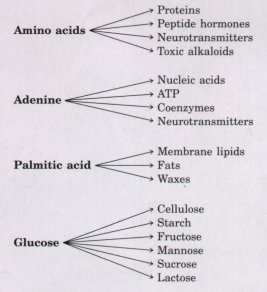 Figure 3-17 Each simple component m Fig. 3-1b is a precursor of many other kinds of biomolecules. |
| It is extremely improbable that amino acids in a mixture would spontaneously condense into a protein with a unique sequence. This would represent increased order in a population of molecules; but according to the second law of thermodynamics (Chapter 13) the tendency is toward ever-greater disorder in the universe. To bring about the synthesis of macromolecules from their monomeric subunits, free energy must be supplied to the system (the cell). | 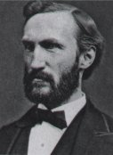 J.Willard Gibbs 1839-1903 |
The randomness of the components of a chemical system is expressed as entropy, symbolized S. Any change in randomness of the system is the entropy change, ΔS, which has a positive value when randomness increases. J. Willard Gibbs, who developed the theory of energy changes during chemical reactions, showed that the freeenergy content (G; recall Chapter 1) of any isolated system can be defined in terms of three quantities: enthalpy (H) (reflecting the number and kinds of bonds; see p. 66), entropy (S), and T, the absolute temperature (Kelvin). The definition of free energy is: G = H - TS. When a chemical reaction occurs at constant temperature, the free-energy change is determined by ΔH, reflecting the kinds and numbers of chemical bonds and noncovalent interactions broken and formed, and ΔS, the change in the system's randomness:
ΔG = ΔH - ΔS
Recall from Chapter 1 that a process tends to occur spontaneously only if ΔG is negative. How, then, can cells synthesize polymers such as proteins and nucleic acids, if the free-energy change for polymerizing subunits is positive? They couple these thermodynamically unfavorable (endergonic) reactions to other cellular reactions that liberate free energy (exergonic reactions), so that the sum of the free-energy changes is negative:
| Amino acids | Proteins | ΔG1>0 (endergonic) | |
| ATP | AMP + 2 PO43- | ΔG2<0 (exergonic) | |
| sum: Amino acids + ATP | Proteins + AMP + 2 PO43- |
The monomeric subunits in Figure 3-16 are very small compared with biological macromolecules. An amino acid molecule such as alanine is less than 0.5 nm long. Hemoglobin, the oxygen-carrying protein of erythrocytes, consists of nearly 600 amino acid units covalently linked into four long chains, which are folded into globular shapes and associated in a tetrameric structure with a diameter of 5.5 nm. Protein molecules in turn are small compared with ribosomes (about 20 nm in diameter), which contain about 70 different proteins and several different RNA molecules. Ribosomes, in their turn, are much smaller than organelles such as mitochondria, typically 1,000 nm in diameter. It is a long jump from the simple biomolecules to the larger cellular structures that can be seen with the light microscope. Figure 3-18 illustrates the structural hierarchy in cellular organization.
In proteins, nucleic acids, and polysaccharides, the individual subunits are joined by covalent bonds. By contrast, in supramolecular complexes, the different macromolecules are held together by noncovalent interactions-much weaker, individually, than covalent bonds. Among these are hydrogen bonds (between polar groups), ionic interactions (between charged groups), hydrophobic interactions (between nonpolar groups), and van der Waals interactions, all of which have energies of only a few kilojoules, compared with covalent bonds, which have bond energies of 200 to 900 kJ/mol (see Table 3-5). The nature of these noncovalent interactions will be described in the next chapter.
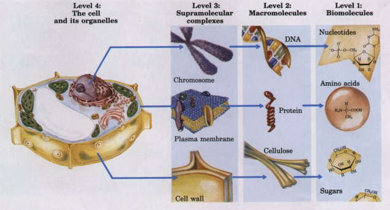
Figure 3-18 The structural hierarchy in the molecular organization of cells. The nucleus of this plant cell, for example, contains several types of supramolecular complexes, including chromosomes. Chromosomes consist of macromolecules-DNA and many different proteins. Each type of macromolecule is constructed from simple subunits-DNA from the deoxyribonucleotides, for example. (Adapted from Becker, W.M. and Deamer, D.W. (1991> The World of the Cell, 2nd edn, Fig. 2-15, The Benjamin/Cummings Publishing Company, Menlo Park, CA)
The large numbers of weak interactions between macromolecules in supramolecular complexes stabilize the resulting noncovalent structures.
Although the monomeric subunits of macromolecules are so much smaller than cells and organelles, they influence the shape and function of these much larger structures. In sickle-cell anemia, a hereditary human disorder, the hemoglobin molecule is defective. In the two β chains of hemoglobin from healthy individuals, a glutamic acid residue occurs at position 6. In people with sickle-cell anemia, a valine residue occurs at position 6. This single difference in the sequence of the 146 amino acids of the β chain affects only a tiny portion of the molecule, yet it causes the hemoglobin to form large aggregates within the erythrocytes, which become deformed (sickled) and function abnormally.
Because all biological macromolecules are made from the same three dozen subunits, it seems likely that all living organisms descended from a single primordial cell line. These subunits are proposed to have had, singly and collectively, the most successful combination of chemical and physical properties for their function as the raw materials of biological macromolecules and for carrying out the basic energy-transforming and self replicating features of a living cell. These primordial organic compounds may have been retained during biological evolution over billions of years because of their unique fitness.
We come now to a puzzle. Apart from their occurrence in living organisms, organic compounds, including the basic biomolecules, occur only in trace amounts in the earth's crust, the sea, and the atmosphere. How did the first living organisms acquire their characteristic organic building blocks? In 1922, the biochemist Aleksandr I. Oparin proposed a theory for the origin of life early in the history of the earth, postulating that the atmosphere was once very different from that of today. Rich in methane, ammonia, and water, and essentially devoid of oxygen, it was a reducing atmosphere, in contrast to the oxidizing environment of our era. In Oparin's theory, electrical energy of lightning discharges or heat energy from volcanoes (Fig. 3-19) caused ammonia, methane, water vapor, and other components of the primitive atmosphere to react, forming simple organic compounds. These compounds then dissolved in the ancient seas, which over many millenia became enriched with a large variety of simple organic compounds. In this warm solution (the "primordial soup") some organic molecules had a greater tendency than others to associate into larger complexes. Over millions of years, these in turn assembled spontaneously to form membranes and catalysts (enzymes), which came together to become precursors of the first primitive cells. For many years, Oparin's views remained speculative and appeared untestable. |
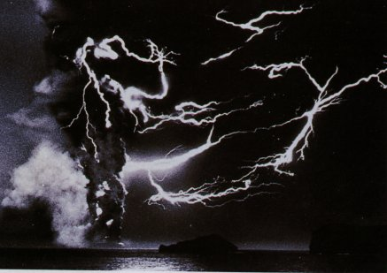 Figure 3-19 Lightning evoked by a volcanic eruption that resulted in the formation of the island of Surtsey off the coast of Iceland in 1963. The intense fields of electrical, thermal, and shock-wave energy generated by such cataclysms, which were frequent on the primitive earth, could have been a major factor in the origin of organic compounds. |
| A classic experiment on the abiotic
(nonbiological) origin of organic biomolecules was
carried out in 1953 by Stanley Miller in the laboratory
of Harold Urey. Miller subjected gaseous mixtures of NH3,
CH4, water vapor, and H2to electrical sparks produced
across a pair of electrodes (to simulate lightning) for
periods of a week or more (Fig. 3-20), then analyzed the
contents of the closed reaction vessel. The gas phase of
the resulting mixture contained CO and CO2, as well as
the starting materials. The water phase contained a
variety of organic compounds, including some amino acids,
hydroxy acids, aldehydes, and hydrogen cyanide (HCN).
This experiment established the possibility of abiotic
production of biomolecules in relatively short times
under relatively mild conditions. Several developments have allowed more refined studies of the type pioneered by Miller and Urey, and have yielded strong evidence that a wide variety of biomolecules, including proteins and nucleic acids, could have been produced spontaneously from simple starting materials probably present on the earth at the time life arose. |
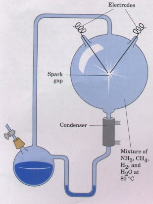 Figure 3-20 Spark-discharge apparatus of the type used by Miller and Urey in experiments demonstrating abiotic formation of organic compounds under primitive atmospheric conditions. After subjecting the gaseous contents of the system to electrical sparks, products were collected by condensation. Biomolecules such as amino acids were among the products (see Table 3-8). |
Modern extensions of the Miller experiments have employed "atmospheres" that include C02 and HCN, and much improved technology for identifying small quantities of products. The formation of hundreds of organic compounds has been demonstrated (Table 3-8). These compounds include more than ten of the common amino acids, a variety of mono-, di-, and tricarboxylic acids, fatty acids, adenine, and formaldehyde. Under certain conditions, formaldehyde polymerizes to form sugars containing three, four, five, and six carbons. The sources of energy that are effective in bringing about the formation of these compounds include heat, visible and ultraviolet (UV) light, x rays, gamma radiation, ultrasound and shock waves, and alpha and beta particles.
| Table 3-8 Some of the products show to form under probiotic conditions | |
Amino acids
Sugar
|
Carboxylic acids
Bucleic acid basas
|
In addition to the many monomers that form in these experiments, polymers of nucleotides (nucleic acids) and of amino acids (proteins) also form. Some of the products of the self condensation of HCN are effective promoters of such polymerization reactions (Fig. 3-21), and inorganic ions present in the earth's crust (Cu2+, Ni2+, and Zn2+) also enhance the rate of polymerization.
| In short, laboratory experiments on the spontaneous formation of biomolecules under prebiotic conditions have provided good evidence that many of the chemical components of living cells, including proteins and RNA, can form under these conditions. Short polymers of RNA can act as catalysts in biologically significant reactions (Chapter 25), and it seems likely that RNA played a crucial role in prebiotic evolution, both as catalyst and as information repository. | 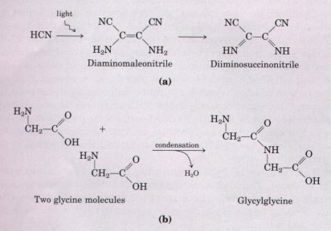 Figure 3-21 Among the products of electrical discharge through an atmosphere containing HCN are compounds such as those in (a). These compounds promote the polymerization of monomers such as amino acids into polymers (b). |
In modern organisms, nucleic acids encode the genetic information that specifies the structure of enzymes, and enzymes have the ability to catalyze the replication and repair of nucleic acids. The mutual dependence of these two classes of biomolecules poses the perplexing question: which came first, DNA or protein?
| The answer may be: neither. The
discovery that RNA molecules can act as catalysts in
their own formation suggests that RNA may have been the
first gene and the first catalyst. According to this
scenario (Fig. 3-22), one of the earliest stages of
biological evolution was the chance formation, in the
primordial soup, of an RNA molecule that had the ability
to catalyze the formation of other RNA molecules of the
same sequence-a self replicating, self perpetuating RNA.
The concentration of a self replicating RNA molecule
would increase exponentially, as one molecule formed two,
two formed four, and so on. The fidelity of self
replication was presumably less than perfect, so the
process would generate variants of the RNA, some of which
might be even better able to self replicate. In the
competition for nucleotides, the most efficient of the
self replicating sequences would win, and less efficient
replicators would fade from the population. The division of function between DNA (genetic information storage) and protein (catalysis) was, according to the "RNA world" hypothesis, a later development (Fig. 3-22). New variants of self replicating RNA molecules developed, with the additional ability to catalyze the condensation of amino acids into peptides. Occasionally, the peptide(s) thus formed would reinforce the self replicating ability of the RNA, and the pair-RNA molecule and helping peptide-could undergo further modifications in sequence, generating even more efficient self replicating systems. Sometime after the evolution of this primitive protein-synthesizing system, there was a further development: DNA molecules with sequences complementary to the self replicating RNA molecules took over the function of conserving the "genetic" information, and RNA molecules evolved to play roles in protein synthesis. Proteins proved to be versatile catalysts, and over time, assumed that function. Lipidlike compounds in the primordial soup formed relatively impermeable layers surrounding self replicating collections of molecules. The concentration of proteins and nucleic acids within these lipid enclosures favored the molecular interactions required in self replication. |
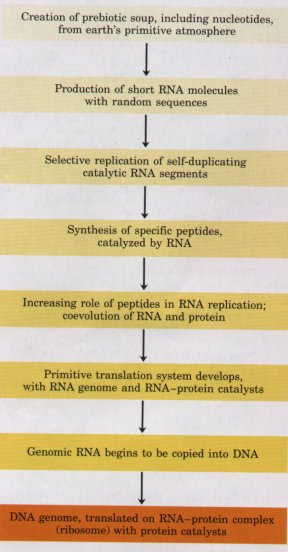 Figure 3-22 One possible "RNA world" scenario, showing the transition from the prebiotic RNA world (shades of yellow) to the biotic DNA world (orange ).RNA Molecules May Have Been the First Genes and Catalysts |
This "RNA world" hypothesis is plausible but by no means universally accepted. The hypothesis does make testable predictions, and to the extent that experimental tests are possible within finite times (less than or equal to the life span of a scientist!), the hypothesis will be tested and refined.
The earth was formed about 4.5 billion years ago, and the first definitive evidence of life dates to about 3.5 billion years ago. An international group of scientists showed in 1980 that certain ancient rock formations (stromatolites; Fig. 3-23) in western Australia contained fossils of primitive microorganisms. Somewhere on earth during that first billion-year period, there arose the first simple orga.nism, capable
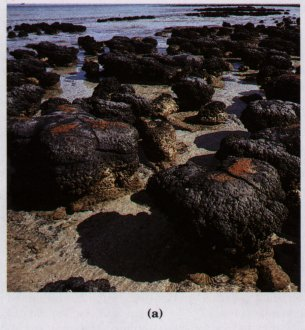
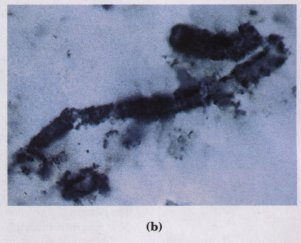
Figure 3-23 Ancient reefs in Australia contain fossil evidence of microbial life in the sea of 3.5 billion years ago. Bits of sand and limestone became trapped in the sticky extracellular coats of cyanobacteria, gradually building up these stromatolites found in Hamelin Bay, Western Australia (a). Microscopic examination of thin sections of stromatolite reveals microfossils of filamentous bacteria (b).
of replicating its own structure from a template (RNA?) that was the first genetic material. Because the terrestrial atmosphere at the dawn of life was nearly devoid of oxygen, and because there were few microorganisms to scavenge organic compounds formed by natural processes, these compounds were relatively stable. Given this stability and eons of time, the improbable became inevitable: the organic compounds were incorporated into evolving cells to produce more and more effective self reproducing catalysts. The process of biological evolution had begun. Organisms developed mechanisms for harnessing the energy of sunlight through photosynthesis, to make sugars and other organic molecules from carbon dioxide, and to convert molecular nitrogen from the atmosphere into nitrogenous biomolecules such as amino acids. By developing their own capacities to synthesize biomolecules, cells became independent of the random processes by which such compounds had first appeared on earth. As evolution proceeded, organisms began to interact and to derive mutual benefits from each other's products, forming increasingly complex ecological systems.